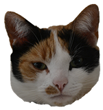

De Poezenboot?
De Poezenboot, een opvangcentrum voor katten op golven. Dit kattenasiel helpt katten groot of klein al sinds 1966. Ze zorgen ervoor dat verwaarloosde, achtergelaten en afgestane katten weer gezond op hun poten kunnen staan, hopelijk met een nieuw baasje in de toekomst. Dankzij vrijwilligers blijft deze boot bestaan en zijn zij het kloppend hart van dit asiel. Sinds kort kreeg de boot en zijn gasten een volledige duurzame upgrade, zo staan ze sterk voor de duurzame toekomst van hun maar ook voor Amsterdam!

Wat kan jij doen?
Zoals je al kon lezen, werkt dit asiel met vrijwilligers dus werken ze ook met donaties. Ze verkrijgen geen subsidies van de overheid, jammer genoeg. De castraties, inentingen, plaatsing van de chips enz. daar zorgt het asiel voor. Hierdoor krijgen de katten een nieuwe frisse start. Dus mocht je ze willen steunen, doneren kan via hun website!
Doneer hier!